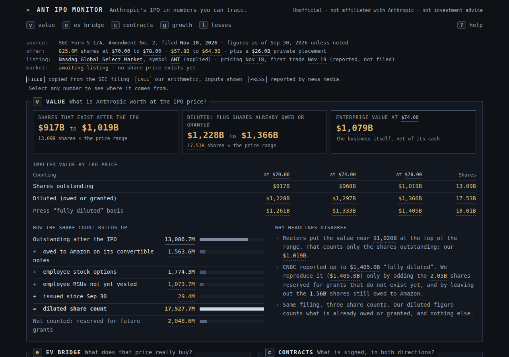
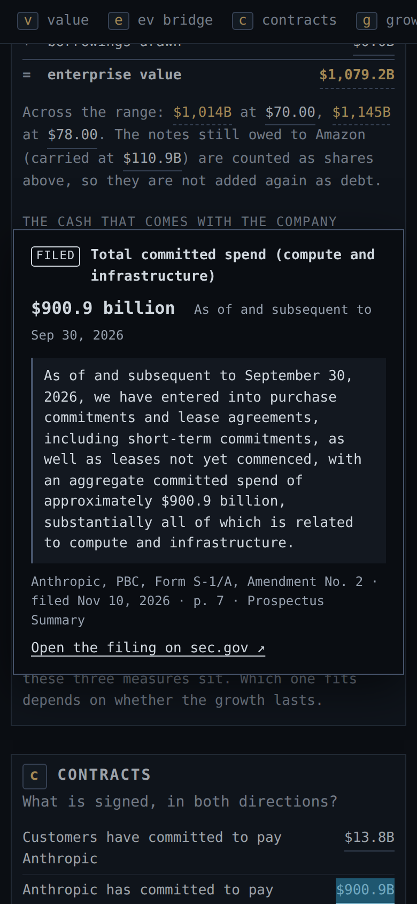
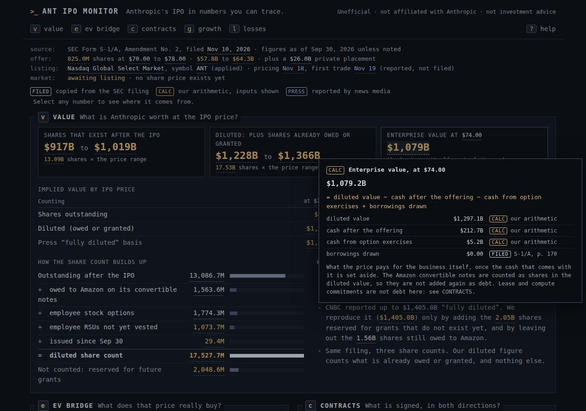
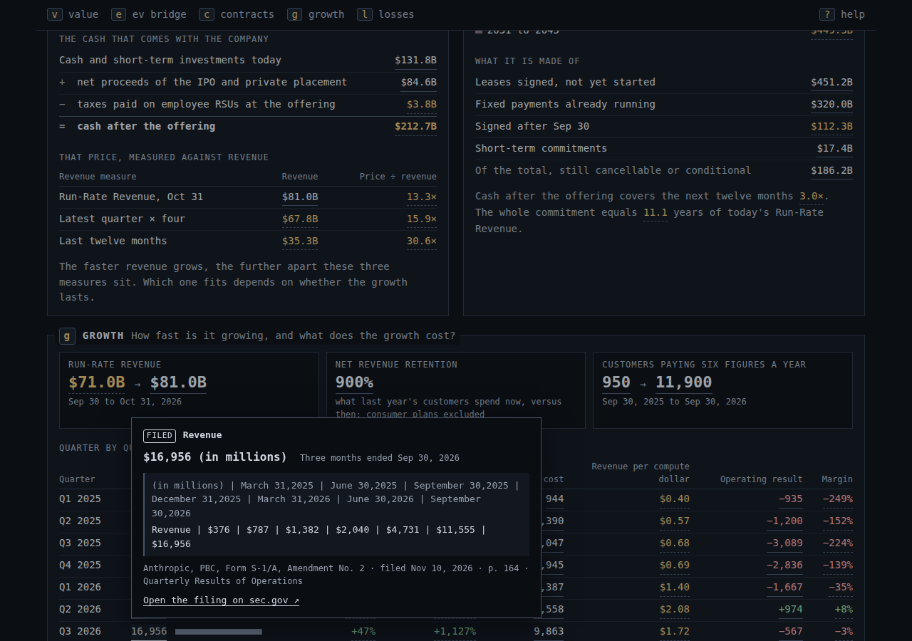
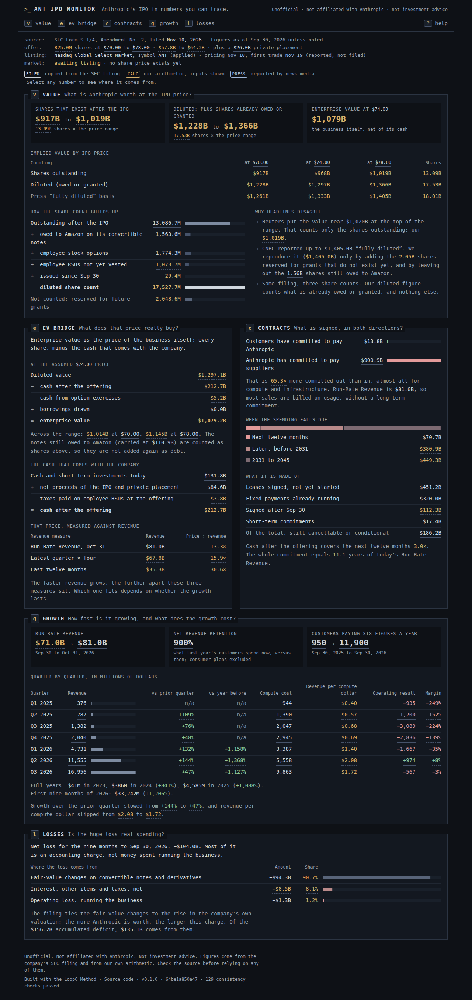

Loop 001 — Sourced value terminal: the first real dashboard, live
2026-11-15 · The placeholder became a real dashboard: five panels on Anthropic's IPO, 125 numbers, each one a button that opens its source. Live at agmgd-on-ipo-monitor-ba4eccd0.fly.dev.
Why
When I look at a dashboard like the one I showed you, I want to know whether Anthropic is undervalued. I have a small stake in the IPO, and I mainly want to try using AI to build a system that monitors all of this. That dashboard is very complete; I'd rather keep mine smoother. Tell me: what is it worth right now? What contracts does it have? What is the valuation, and is it really overvalued?
Yes to the objective, but we'll be online well before the listing. The five cards, and more: I want to see the value of the contracts and the real value of the company. I'd also like a very different style: a terminal, code-like look — not neon. Let's stay efficient and light.
The owner spoke in French; these are their words reworded in English at their request, with the meaning unchanged.
What changed
- Five panels answer five plain questions. VALUE (what is it worth at the IPO price), EV BRIDGE (what does that price really buy), CONTRACTS (what is signed, both ways), GROWTH (how fast, at what cost) and LOSSES (is the huge loss real spending). The mission planned four; LOSSES was added because the owner had asked about the losses.
- Every number is a button. A FILED number opens the passage of the SEC filing with its page. A CALC number opens the formula and every input. A PRESS number opens the quote and the article. A test fails if a digit appears on the page outside a sourced number or a period label.
- The figures are extracted by code, not typed. A script reads the owner's saved copy of Form S-1/A, Amendment No. 2 (filed 2026-11-10) and writes 276 facts, each with its page and quote. If a figure is not where it is expected, the extraction stops.
- The figures must agree with each other. 129 checks compare what the filing says in two places: quarters against the year, a sentence against a table, parts against their total. The service does not start if one fails.
- Why headlines disagree. Reading the filing explained the gap between the reported valuations. About $1.02 trillion counts the shares that exist after the IPO. Up to $1.405 trillion is reproduced, to four digits, only by adding 2.05 billion shares reserved for future grants and leaving out 1.56 billion shares still owed to Amazon on its convertible notes. The page shows the three counts side by side.
- A calm terminal. Monospace, dark, one sand accent for our arithmetic, green and red only for changes. Keys
vecgljump to the panels. The page works without JavaScript and loads one stylesheet and one script, nothing external. - A repeatable deployment. One script on the machine builds a tagged release in its own folder, switches to it only once built, checks its health and puts the previous one back if it fails.
- The foundation of a public repository. MIT license, CI with real-browser tests and a secret scan, CodeQL, Dependabot, pre-commit hooks, and the project documents.






What the real browser caught
The unit tests passed while two defects were on the page. The browser tests found both:
- On a phone the page scrolled sideways by 145 pixels. Hidden helper text inside the wide quarterly table was positioned against the page instead of the table. Fixed by containing it.
- Nine labels failed the contrast check (2.3 to 1 where 4.5 to 1 is required). Fixed with a lighter grey.
The strict Content-Security-Policy also blocked one of the test's own helpers, which evaluated a string as script. The test was changed; the policy stayed.
Checks
| Command or check | Result | Notes |
|---|---|---|
uv run ruff format --check . · uv run ruff check . | passed | No warning. Locally and in GitHub Actions. |
uv run mypy | passed | Strict; 21 source files, no issue. |
uv run pytest | passed | 56 tests, including the extraction re-run against the saved filing, which reproduces the committed dataset byte for byte. |
uv run pytest -m e2e (local server) | passed | 4 real-browser tests: desktop and keyboard, phone first screen, no JavaScript, load time. |
E2E_BASE_URL=… uv run pytest -m e2e (live site) | passed | The same 4 tests against the public URL. The screenshots on this page come from that run. |
| Accessibility (axe, in the browser tests) | passed | No serious or critical issue on desktop and phone, after the contrast fix. |
| GitHub Actions: CI and CodeQL on the released commit | passed | Format, lint, types, unit tests, browser tests, gitleaks; CodeQL on Python, JavaScript and workflows. |
| Secret scan of the staged changes (gitleaks 8.30.1) | passed | No leak found; no contact address in the repository. |
| Seventeen numbers read off the live page | passed | Filed ones match the filing; calculated ones match arithmetic done by hand. |
curl of /health and / on the public URL | passed | Release 0.1.0; 16 KB compressed; about 0.2 s. |
| Deploy, roll back, and a release with a wrong figure, on the machine | passed | The wrong figure stopped the service; the script put the previous release back. |
| Memory on the machine | passed | The service uses about 50 MB of 256 MB. |
uv run pre-commit run --all-files | passed | Format, lint, types and the gitleaks hook, on all files. |
| The owner answers "worth, owes, growing" in under 60 seconds | not_run | Only the owner can run it, on the live page. |
Departures from the mission
- Loop 001 deployed to the machine, and there is no
fly.toml. Loop0's template for a first loop says otherwise; the owner approved both before the build. - A fifth panel (LOSSES) and a third label (PRESS, for four reported figures) were added.
- SQLite is part of the chosen stack but is not used yet: nothing changes at runtime.
- Some explanatory lines run to three lines on a desktop screen and more on a phone; the mission asked for two at most.
- The site was unreachable for about a minute in total during the deployment tests, including the deliberate failure.
What is left
- The owner's 60-second test on the live page.
- Before the first trade (reported for 2026-11-19): the market panel, the final price, the EDGAR watcher with "what changed", AI explanations.
- Two secrets must reach the machine first (the AI key and a contact address for sec.gov); Agent Manager cannot assign them to an existing machine yet.
- Automated deployment from CI, a "How We Build" page, storage and history.
- The full list is in
BACKLOG.md.